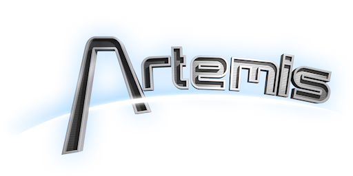

Artemis Spaceship Bridge Simulator lets you turn a group of computers into the bridge of a spaceship. Take on the roles of Captain, Helm, Tactical, Science, Engineer, and Communications. Sounds daunting? The following guide is a quick reference to get any ensign up to speed!
To get started, click on one of the station's symbols below
Helm
Tactical
Engineer
Science
Communications
Command